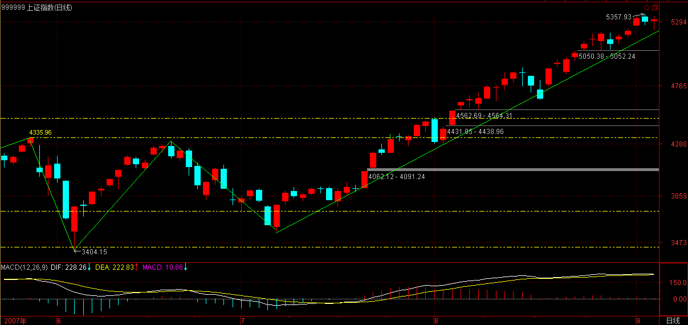

(2007-09-03 19:19:43)
刚忙完一轮，8点半还要到国际俱乐部那边，11点前是肯定回不来了。就抓紧时间说两句。
现在梦话一点杂史，并不是说技术已经说完了，那还早着。只能在说技术中间穿插一下，这样不会让人完全沉浸在技术之中。毕竟，技术只是其中一方面。视角越全面，才会有更大的成就。
以下开始说梦话，谁信谁有毛病。
股票，公开的，谁都可以买卖，这就是其复杂所在。一般来说，单纯犯坏的难度当然比建设的难度小。如果你技术过关，你可能只拥有流通量5%，但你就能阻击一个有流通量50%的人。
玩死一个庄家，归根结底，就是两种：时间上害死他；空间上害死他。
有些心理有毛病的庄家，最容易被时间上害死。特别那些有洁癖的，总是希望把盘给洗得一尘不染，这种人，最容易玩了。你只要不断在里面折腾，让他感觉到里面人特乱，筹码特乱，那么这些无聊的家伙就是洗呀洗的，洗到行情都走完了，还在那里洗。很多庄家，就是太有洁癖了而被害死的，特别那些经验不足的，资金实力又有限的。
以前，要玩这些家伙，有一招一直都很有效，不过后来用多了，就不大好用了，现在基本没用。当时，喜欢用一个帐号，齐刷刷就买一个巨大的惹眼的数量。能坐庄的，基本都能打单，这样一个帐号，不可能不知道。一般来说，这样一件事情，对于那些新手，就够他们一阵折腾了。开始，不用在盘面上搞他们，等他们适应一段时间，有点麻木，就要给新的刺激。例如，再找一个新的帐号买一个更大量的数量，注意，这些数量一般都控制在流通量的2%以下，不能大到影响这些家伙坐庄的信心。再折腾一段时间后，就要换手法，例如，在盘面上就要不时神经质地搞他两下，一般都是在他将高潮未高潮的时候，狠狠来一下，让他以后欲高潮时都留下后遗症，这样反复折腾，将他搞成ED男。
注意，折腾人不是靠光砸光买就可以。其实，真干的时候，就是来回弄，那家伙砸的时候，就要敢接，拉的时候就要敢给，但那几个明目装胆的帐号是不能动的，让他们搞不明白水的深浅。一般来说，阻击，只要拿流通的10%以下就足够了，其实，都不需要那么多。原则就是有能力在出手的一天内倒出一个10-20%上下的换手大量来，而且震荡的区间一定要足够大，有可能就涨停到跌停来回N次。一个股票，特别在准备高潮时倒出这样一个大幅度震荡的大量，想不ED都难了。
而倒出这样的量，实际需要的筹码并不要太多，因为，不可能全天的交易都是一方搞出来的。倒的时候，技术高的，完全可以做到顺便就把差价给弄了而筹码尽量不丢。但注意，这种折腾，一定是在底部或相对底部的位置，这样，最好就在庄家成本的附近，这样操作的难度就小多了。如果庄家给你玩恼火了，不玩了，撤了，一定要捣乱，不能让他顺利出去。只要你能让他亏钱出去，就是成功。一句话，就是不能让他挣钱跑。而且，在日常的折腾中，一定要弄各类手段去垫高其成本。
有些手法，和经验有关，不是一般人能干的。例如，要充分利用另外的分力的力量。庄家只是其中的一个分力，如果你能利用好其他分力，那庄家也只有给你折腾的份。
最狠的一种折腾，就是把这股票完全搞臭，也就是所有散户都知道这股票是ED男，然后就搞成两家或N家对垒。一般搞到这种地步，就是完全的强盗逻辑了。或者你就亏钱走，或者就送钱给大家花，否则大家就耗着，看谁怕谁。庄家比你拿得多，占的资金多，而且他的钱可能还来路不明，有期限的，这样折腾，100个至少99个要死掉。
当然还有更狠的，那就是工夫在诗外的玩法了，一般这种招数不能用，这样有点过分，有点不讲江湖规矩了。这种玩法，最普通的就是从资金面下手，只要能断了对方的资金来源，你想搞死谁不可以？当然还有更狠的，就没必要说了。
上面是说在时间上搞死，一般这种，都是走出一个复杂的大级别中枢。而在空间上搞死，那就是另一种玩法了。这种玩法的基本原则就是：庄家要风，就助他风；要雨，就助他雨。这样，先养其骄。等到其觉得不可一世、春风得意时，突然出手，这出手，一定要稳、准、狠，一下就要其命。在纯技术的角度，这就是要先砸出一个相当狠的第一段，然后，引发散户恐慌盘后，回接。这里，出手的位置很关键，太低没有杀伤力，太高又太晚。因此出手的时机决定成败，这需要经验、判断、技术很多综合的因素，不是一般人能干的。
回接后，就是用来阻击庄家反扑的。庄家给第一段出手后，肯定有反扑，这时候，就要有足够的子弹进行塔山阻击战。股票有一个好处，没有子弹，只要有钱，马上就可以采购，所以必须要利用好这一特性，控制好阻击的节奏、能量。【韶山映山红】这里说的子弹是股票。砸下来以后，回购散户的抛盘，既可以用于底部做短差，也可以用于庄家砸盘的时候跟着砸。】
一定要注意，第一段后只能回接散户的恐慌盘，不能接庄家的抛盘。因为你先出手，所以如果庄家跟着也砸，你就要更狠地倒下去。最好直接倒出一个V型反转，这样，连塔山阻击战都省了，这股票，至少残废一年半载，再找一个机会完全把他废了，还不是迟早的事？
不能再说梦话了，快7点半了，等一下还有事忙。先下，再见。
(2007-09-04 15:12:24)
4点在国贸有会，只能以最快速度说上两句。
今天的震荡，在技术上，就是昨天的缺口，这已经明说过；【韶山映山红】缺口都有吸引力。】
心理上，最近天天报上有提示风险的文章，你说心理上能没压力？
这个震荡明天是否加大，其实都不重要，从纯技术上说，这缺口如果补了后没有有力的回拉，那短线问题就严重了。所以，缺口越不补越不存在技术压力，这叫强者恒强。一旦强者不能恒强，那较大级别的调整就不可避免的。所以从技术上，走得越强越不用担心，一旦有走弱迹象，反而是短线必须小心的。
个股方面，可能会有人骂今天的中石头和联通。这些人都是一点良心都没有的，没有中石头、联通，3600能不能转过来还是问题，最近这俩为大盘已经给了足够贡献了，一直缩着不动。到现在还不让动一下，万一刀子下来，连回跳的空间都没有，那真雷锋了。
闲话不能说了，图明天再贴，今天下午会后，晚上还有一个PE的项目要谈合同，所以晚上可能很晚。
对不起，先下，再见。
(2007-09-04 23:03:33)
下午4点开始，折腾到现在才到家，够无聊的。也没写任何东西的兴趣了，就用旧作一首敷衍一下各位，愿各位都能好梦一把。
星灯
缠中说禅
星灯万点湛天街
银汉舒波日月崖
玉宇琴音玛瑙石
瑶池舞影水晶鞋
空中宫阙春云曳
梦后楼台晓雾埋
难枕相思露华重
碧宵魂荡九风排
[匿名] 不想飞
匿名] 50年以前
昨天在选中铝和西部材料的时候，选了后者，哎，没这种命啊
====
我选前者，今天就从它身上偷件衣服穿穿～呵呵.夏天偷冰棒，这个季节偷衣服最爽的.
2007-9-5 10:37
[匿名] 不想飞
[匿名] 新浪网友
不想飞:请问737现在能不能进?
＝＝＝＝
不是时候.
2007-9-5 11:03
[匿名] 不想飞
匿名] 新浪网友
2007-09-05 10:37:14
匿名] 50年以前
昨天在选中铝和西部材料的时候，选了后者，哎，没这种命啊
====
我选前者，今天就从它身上偷件衣服穿穿～呵呵.夏天偷冰棒，这个季节偷衣服最爽的.
-----
飞学长，能从技术的角度给讲讲吗，盼望中
＝＝＝＝
技术上，我能讲的缠姐姐都讲.而我讲了没有姐姐那样严格会误导你的.
2007-9-5 11:17
[匿名] 不想飞
优雅从容
匿名] 不想飞 2007-09-05 10:37:14
匿名] 50年以前
昨天在选中铝和西部材料的时候，选了后者，哎，没这种命啊
====
我选前者，今天就从它身上偷件衣服穿穿～呵呵.夏天偷冰棒，这个季节偷衣服最爽的.
======================
请飞姐点评一下下中铝和西材，偷中铝是不是快进快出抢反弹呀？谢谢！
＝＝＝＝＝
我从来不想把东西定死，怎样能让我赚钱我就怎么做.
西材嘛，我没玩过，一上市就圈那么多倍的票票从来不去抬.这个跟有钱没钱赚没关系，就是不想给那种票票抬桥.
2007-9-5 11:34
[匿名] 不想飞
不好意思，刚去咪了会.现在大盘越来越微妙了，最好不要频繁操作.
2007-9-5 13:36
[匿名] 不想飞
匿名] 新浪网友
[匿名] 不想飞 删除此人所有评论
2007-09-05 13:36:43
不好意思，刚去咪了会.现在大盘越来越微妙了，最好不要频繁操作.
-----------------------
学姐，南沽还可以加仓吗？
＝＝＝＝＝
可以做价差，加仓得找个好点.这个点并不一定要低点，＂而是风险较小的点＂.
2007-9-5 13:46
[匿名] 不想飞
匿名] 50年以前 2007-09-05 14:29:24
刚刚是因为昨天尾盘买了一些，心态有些变化，有点恐慌了，如果有人因为我刚刚的留言减仓了，因此造成你的损失，在这里向你道歉了，对不起
＝＝＝＝
买错的，只能增加你了经验.但心态不能乱，心态好，你的分析就会越来越冷静，有些细小的地方还是需要冷静的心态才能发现的.
2007-9-5 14:36
[匿名] 不想飞
现在可以留意南沽，是否有补仓的机会.
先下了，祝各位师兄弟，师姐妹妹：都好运连连！
2007-9-5 14:45
(2007-09-05 16:10:28)
今天的走势真没什么可说的，周一留下缺口，技术上需要三天时间去考验，今天一个过于程式化的补缺口震荡如期上演，让人误以为在长不安大剧院看一场京剧表演。【韶山映山红】1931年9月18日，张学良在长安大剧院看梅兰芳的京剧《宇宙锋》，日本关东军袭击北大营。20万东北军不战而退，2万日军占领东三省。】
程式化震荡后，才是问题的关键。
从纯技术的角度，下图中，62-71的5分钟中枢突破后，71-80是一个标准的1分钟上涨，也就是次级别的离开，而80-83是一个标准的1分钟盘整回拉，也就是说83是教科书式的62-71的5分钟第三类买点，【韶山映山红】次级别的趋势+次级别的盘整的组合。★ 1分钟上涨趋势没有趋势背驰，最后一个中枢的离开段盘整背驰结束1分钟上涨走势。 82-83对80-81线段盘整背驰，1分钟盘整结束，没回踩5分钟中枢GG。】
其后的走势无非两种：形成更大级别震荡，或者是5分钟中枢上移的延续。【韶山映山红】62-71的5分钟中枢出现第三类买点，然后主要是两种演化：可以扩张升级形成30分钟中枢，也可以5分钟中枢上移形成5分钟趋势。】
现在，最坏的情况就是形成一个30分钟的中枢，【韶山映山红】下面8-49已经有一个30分钟中枢了，再形成一个，也就是30分钟上涨趋势。其实还不是最坏的情况。这里发生转折向下的情况更坏。】最好的就是继续5分钟的上涨，直到形成新的5分钟中枢。【韶山映山红】最好的，83之后继续上涨，在更高的位置形成新的5分钟中枢。】技术上的形态，就这两种情况，没什么可说的，根据走势当下就可以判断。【韶山映山红】站在三买点的角度看，只有这两种走势。如果完全分类，就还包括1分钟向下走势延续，形成80点开始的转折，甚至跌破5分钟中枢62-71形成第三类卖点。】
说得仔细点，【韶山映山红】上面说的是5分钟级别的走势，仔细点，就说1分钟级别的走势。把谁说得仔细点？这里专门说的是5分钟上涨的情况，所以后面说“必须要在目前位置形成新的5分钟中枢”。如果抛开这个语境，就没有“必须要”的说法了。】就是明天不能新高，或新高后出现1分钟的不构成第三类买点的盘整背驰，那么必须要在目前位置形成新的5分钟中枢了，【韶山映山红】这一句说的是，在什么情况下，如果不形成5分钟中枢、延续5分钟走势，就会走向形成30分钟中枢的道路。1，如果第二天不能新高，首先是必然有一个76-79的1分钟中枢，然后要么盘整要么回跌，如果这里不形成5分钟中枢，那就是1分钟向下，当然也就没有5分钟走势了，所以不能新高就“必须要在目前位置形成新的5分钟中枢”。,2，如果第二天新高、不出现1分钟的盘整背驰，不管76-79的1分钟中枢是否形成，都将是1分钟离开的继续，当然不会威胁5分钟走势的延续,3，如果第二天新高，出现1分钟的盘整背驰、构成第三类买点，那么，或者1分钟继续向上，或者形成5分钟中枢，都无所谓，所以这种情况也没有什么必须的。4，如果第二天新高，出现1分钟的盘整背驰、不构成第三类买点，后面要么就继续延伸，要么就此下跌，所以这种情况就“必须要在目前位置形成新的5分钟中枢”，以证明5分钟走势还能保住。】后面就很简单，就看中枢震荡后是出现第三类买点还是卖点了。【韶山映山红】这里说的是5分钟中枢后先出三买还是三卖。】至于明天能形成1分钟的第三类买点，那么大盘就将上涨去延续寻找新的5分钟中枢的过程。【韶山映山红】不新高，或新高后盘整背驰无三买，都被排除了，就只有新高不盘背、新高盘背有三买两种了。】

个股方面，二、三线题材股继续发威，这是好现象。而一线大盘，关键就看建行的发行价了，如果搞出一个比现在中行、工行差不多甚至还高的发行价格，那么这些一线大盘就谁都按不住了。这其实也是本ID为什么一手题材股、一手中字头，两手都要硬的原因。你想，如果中移动发30-50元，那么中国联通待在10元之下，他好意思？如果中石油也搞个20-30元的，中石头怎么好意思在20元之下。
目前，这些大石头们最大的支持或动力，就是同类回归的价格，一旦建行出现一个高发行价，后面回来的想低都没门了。这样，各位就继续疯狂吧。【韶山映山红】601939建设银行，发行价格6.45元。2007.09.25上市，开盘价8.55元。】
现在，情况很清楚了，本ID也说得很明白，管它明日洪水滔天，如果你心态好、真来家伙时能手起刀落，够恨，那就充分享受这疯狂的游戏吧。
东风吹，战鼓擂，这个世界谁怕谁？
【韶山映山红】《全世界人民一定胜利》 东风吹，战鼓擂，现在世界上究竟谁怕谁？ 不是人民怕美帝，而是美帝怕人民！ 得道多助失道寡助，历史规律不可抗拒，不可抗拒！ 美帝国主义必定灭亡，全世界人民一定胜利！ 全世界人民一定胜利！
试听： http://bd.kuwo.cn/play_detail/4456827?from=dq360
这是文革时期的歌曲，根据毛泽东主席1970年5月20日发表的《全世界人民团结起来，打败美帝国主义及其一切走狗》的声明改编的，在1970年～1973年之间十分流行，一般只要是有外事活动，特别是与越南、老挝、柬埔寨和朝鲜外宾交往的活动中，这首歌始终是主题歌，因为反美的共同理念使我们走到一起，反美的大旗成为我们共同前进的指引。
后来这首歌被收入当时国务院文化组编辑的《战地新歌》歌曲集中。再后来由于中美关系改善，毛泽东提出“一条线、一大片”的反苏统一战线的思想后，中美之间迅速从敌对走向缓和，甚至部分结盟。这首歌也就逐渐低沉，乃至销声匿迹。】
但如果你没这胆子，就把仓位调节好。否则，你又想疯狂，又要疯狂没有任何代价，那还是回火星去吧。
今天可以回答问题到5点。
[匿名] 新浪网友 2007-09-05 16:13:43
不知缠妹对钢铁板块看法有没有变？
==
没有，钢铁更大的机会在收购重组中。
2007-9-5 16:16
[匿名] 退伍老兵 2007-09-05 16:16:21
姐姐我想重仓600050不知道可不可以，我是一个退伍军人，不是很懂股票，想赚点创业资金。
==
中国联通从中长线的角度肯定没问题，不过技术上这个价位不是什么好的买点。
联通的题材，粗略说有三个方面：中移动回归、整体上市、电讯重组。相比起来，后面两个才是重点。而电讯重组是最重要的，如果按目前的方案，联通专搞GSM，也就是以后139、138之类的都归联通了，你说他的空间有多大？
当然，这个电讯重组的变数还很大，没到最后一刻，谁都说不好。
2007-9-5 16:22
骄阳10000 2007-09-05 16:18:53
禅师,能讲一下81、82这个分段为什么中间那个高点不是一个段呢？

==
因为那只是一笔，笔破坏不等于线段破坏。
2007-9-5 16:24
对线段还有困惑在第二种情况里，就是分型第一，二元素间有缺口
1.最后缺口被封闭，但没有线段破坏，比如62-63，
2.最后缺口没被封闭，有连续三笔，但这三笔没破坏原线段，32-33是这种情况
3.最后缺口没封闭，有线段产生，但线段破坏了原线段，也就是真有新线段形成，就是长沙那课小级别转大级别的那个图
如何把前两种情况和第三种情况区分开来？按定义是无法做到的，至少我的理解是无法做到，你上次答疑我也没明白
答疑说：请先搞清楚底分型是从哪里开始算起，哪里开始结束。在这种前面是下跌的，对应的第二是上涨的，其特征序列就是看向下的，这第三个向下的，已经跌破原来第一段的底，怎么能属于第二段里的特征序列？特征序列的底或顶，首先必须要都属于这个特征序列才行，这是前提条件。其实，如果第二特征序列没有三个元素，就根本不存在出现分段中第二种情况的可能

我的问题是：分型的开始和结束是怎么定义的？说第二个特征序列没有三个元素，根本不存在就根本不存在出现分段中第二种情况的可能，那么第二种情况的那个三段例图，也符合第二特征序列没三个元素的情况吧，为什么会是三段？

谢谢！
2007-9-5 16:15
[匿名] 顶石猴的问题 2007-09-05 16:22:20
对线段还有困惑在第二种情况里，就是分型第一，二元素间有缺口
1.最后缺口被封闭，但没有线段破坏，比如6263，
2.最后缺口没被封闭，有连续三笔，但这三笔没破坏原线段，3233是这种情况
3.最后缺口没封闭，有线段产生，但线段破坏了原线段，也就是真有新线段形成，就是长沙那课小级别转大级别的那个图
如何把前两种情况和第三种情况区分开来？按定义是无法做到的，至少我的理解是无法做到，你上次答疑我也没明白
答疑说：请先搞清楚底分型是从哪里开始算起，哪里开始结束。在这种前面是下跌的，对应的第二是上涨的，其特征序列就是看向下的，这第三个向下的，已经跌破原来第一段的底，怎么能属于第二段里的特征序列？特征序列的底或顶，首先必须要都属于这个特征序列才行，这是前提条件。其实，如果第二特征序列没有三个元素，就根本不存在出现分段中第二种情况的可能
我的问题是：分型的开始和结束是怎么定义的？说第二个特征序列没有三个元素，根本不存在就根本不存在出现分段中第二种情况的可能，那么第二种情况的那个三段例图，也符合第二特征序列没三个元素的情况吧，为什么会是三段？
谢谢！
==
在第二种情况中，如果不满足定义的情况，就不算线段被破坏。
例如一个下跌，一个ABC的回拉是第二种情况的，然后一个新的一笔下跌直接就新低，那显然就不符合定义，所以就是原来的下跌没结束。
而如果ABC的回拉是第一种情况，那么原来的下跌肯定结束了，这就是第一、二种情况的区别。
另外，有些概念请搞情况。第一、二种情况是完全的分类，不是第一就必须是第二，先区分了第一、二种情况才有后面第二个特性序列的问题。【韶山映山红】有时候，先是第一种情况的笔破坏，然后做包含处理之后，看上去变成了第二种情况，如何划分，就有了分歧。我觉得很简单，既然先是第一种情况，以此为前提基础做的包含处理，那就始终按第一种情况对待。如果又要按第二种情况处理，那么，依据什么做的包含处理呢？两种情况的划分依据是第一笔是否有笔破坏，属于动力学分析的分类，是对第一笔的力度做完全分类，至于后面走成什么样，是线段是否成立的问题。】
对于第一种情况，这个问题根本不存在。【韶山映山红】对于第一种情况，第二特征序列是否满足分型要求的问题，根本不存在。】
如果对第二种情况，找不到第二特征序列，那就是原来的线段没被破坏，就这么简单。【韶山映山红】对于第二种情况，首先要能够找到第二特征序列，否则就肯定是原线段延伸。】
请一切从定义出发。
2007-9-5 16:33
[匿名] 此生如初见 2007-09-05 16:28:12
老大，有色金属板块在新进资金尤其是新基金的推动下，如果N年后它们不拆细，很有可能都达到百元，当然市盈率可能仅有50-60，动态市盈率可能更低，那样整个A股市场可能有30—50只百元以上股票，这种现象可能出现么？
==
没有什么不可能的。如果中字头都整体上市，那200只100元以上的也是太正常的现象。
2007-9-5 16:46
石猴 2007-09-05 16:35:10
在74、75上面，08.31 10:55那下来一笔，封闭了缺口，后面也先跌破这一笔的结束点，为什么不是线段呢？【韶山映山红】通达信的历史数据复盘，这里有三笔下跌，但不像石猴说的08.31 10:55那下来一笔封闭了缺口。】
==
这只是笔破坏，没有线段破坏。【韶山映山红】飞狐的历史数据复盘的时候，这里的向上笔不成立，所以只有一笔向下，如缠师所言，只是笔破坏。】
2007-9-5 16:52
全线飘红 2007-09-05 16:38:41
请问缠主。79－80这个线段是去比77－78（盘背），还是比（75－76）呢？标准是什么？79－80毕竟创新高不多。【韶山映山红】这个问题应该是：如果只有一个中枢，a+A+b，如何判断当前是A的次级别走势，还是b？因为76-77-78-79已经形成中枢，79-80可能是中枢延伸的一部分，也完全可能是b的一部分。★】
==
这和创新高多少没关系。关键看有没有趋势。【韶山映山红】创新高只看有没有，不看有多少。】
2007-9-5 16:54
[匿名] 手机用户 2007-09-05 16:47:16
老大,一个线段有时离开中枢力度很大没有背驰,但不一定形成三买卖点.怎样预判?【韶山映山红】这个问题应该是：如何预先知道将有这个力度大的一段的发生？不形成三买就直接上去，让我们踏空了。很高位再形成三买就失去很大的机会了。】
==
第三类买卖点，必须是回拉的力度没有离开的力度大才可能形成。如果回拉走势都没有出来，怎么可能预判？离开的力度大，如果回拉的力度更大，那当然就不形成第三类买卖点。所以一切都必须等图形当下走出来。【韶山映山红】离开段只能看着，回踩段也只能看着，等回踩结束时，才知道有没有三买。至于抓住离开段上涨的收益，与三买无关。】
2007-9-5 16:59
[匿名] 新浪网友 2007-09-05 16:48:07
线段划分第二种情况.向上笔开始的线段, 该图是几段线段呢？
==
一段
2007-9-5 17:00
[匿名] 新浪网友 2007-09-05 16:59:41
缠住昨天说补了缺口行情会走弱，今天补后大盘反而放下包袱，重新站在5300点上，不知缠住有什么看法？谢谢
==
本ID没什么想法。
不补缺口是最强的，补了缺口能强力拉回并继续新高那是次强的。如果补了缺口拉回无力，不能新高，那就是最弱的。【韶山映山红】从另一个角度理解，不补缺口最强，但是缺口阴影总在，总有震荡的顾虑。补了缺口再涨就踏实了。】
现在大盘不能选择最强的，而后面两种，选择什么，让大盘自己来，本ID没预测的兴趣。

2007-9-5 17:03
[匿名] 大盘 2007-09-05 16:58:11
请问博主：对于补日线缺口，是不是只要把缺口上一日k线的最高点跌破就可以是吗
==
对。缺口就是从某天起没有交易的区间，在某天后，这区间有交易了，就是缺口补了。
2007-9-5 17:06
[匿名] 新浪网友 2007-09-05 17:04:05
请问上图中的笔，是ＡＤ一笔呢还是ＡＢ，ＢＣ，ＣＤ三笔呢？
==
AB肯定不是一笔，BC也不是，至于AD是不是，这要看D后面的走势。
找笔，首先要找分型。A、D都满足分型的条件，但关键看D后面的分型是顶还是底，如果是顶，那么AD就是一笔。如果是底，那D肯定不是和A构成一笔的那个底。【韶山映山红】C高于A，为什么A有可能是顶呢？不是说顶是一笔里的最高吗？同样的B和D的底的问题，存疑。★以后研究。】关键是，一划是一根K线，还是几划是一根K线。】
2007-9-5 17:13
【韶山映山红】这个问答已经看不见了，发现后面有一个回复，不知道谁写了什么。 2019/08/16 11:14 】
好了，5点过了，先下，再见。
2007-9-5 17:15
本课目录
教你炒股票76：逗庄家玩的一些杂史2技术、心理引发震荡七律：星灯程式化补缺口震荡如期上演